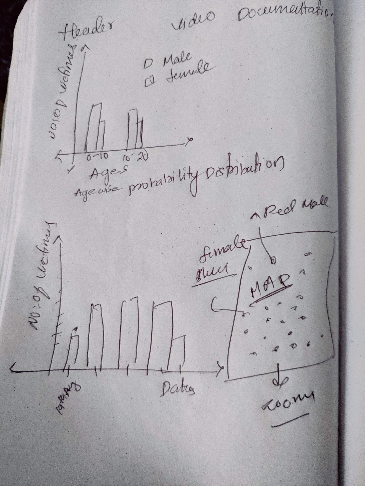
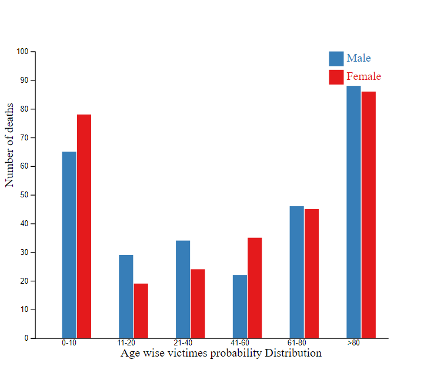
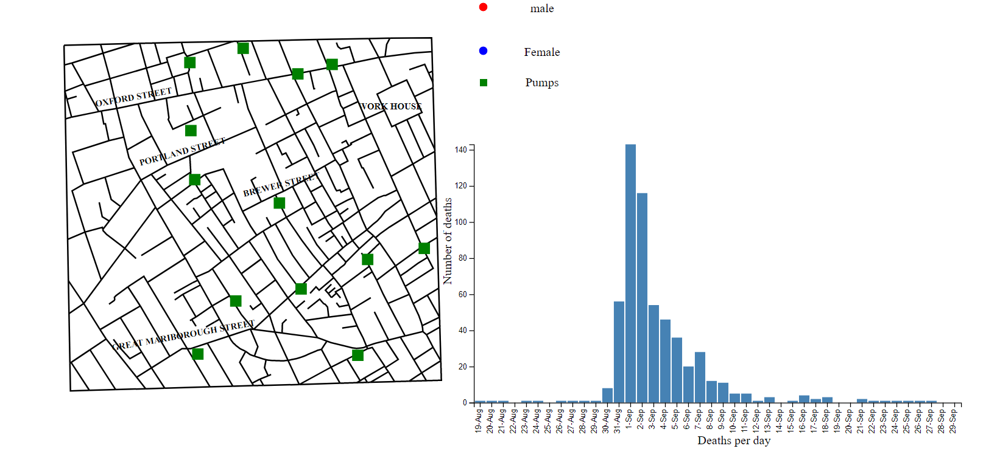

The main of this project is to show jhon snow colora map, Jhon snow has prooved with his visulization that colora is transmitted through water not air
I have made a rough picture of what I am going to do, below is the picture
After this step I started off my designing with the probabbility distribution chart
The probability distribution chart should have clearly explain the deaths of the victimes with the age and gender
Count the number of females in the with and grouping them by age and then the same applies with the male, Creating the X and Y axis with respect to the range of Y axis is the max number of males and females in the respective groups
I started with the streets map and created a curvelinear map by linking the points and plotting them in an svg. Another way is a geocentroid; I have drawn a graph time line with the date on the x axis and the number of deaths on the y axis. The graph explains fatality over time, This graph clearly displays the number of deaths for each day. When you hover over the graph, the number of deaths up to that point(till date) are displayed in the map, with male and female deaths denoted by red and blue circles, respectively.
https://gist.github.com/samselikoff/9521163
https://d3js.org/
https://bl.ocks.org/d3noob/a22c42db65eb00d4e369
https://github.com/curran/screencasts/tree/gh-pages/splittingCharts/examples/code
https://zhuangke16.github.io/H517-Project1/
https://datawanderings.com/2018/08/15/d3-js-v5-promise-syntax-examples/
https://d3-graph-gallery.com/graph/barplot_grouped_basicWide.html
https://codepen.io/search/pens?q=d3&cursor=ZD0xJm89MCZwPTQz
https://www.geeksforgeeks.org/d3-js-line-curve-method/
https://observablehq.com/@bradydowling/u-s-state-capitals
https://github.com/d3/d3-drag
https://developer.mozilla.org/en-US/docs/Web/SVG/Attribute/d
https://d3-graph-gallery.com/graph/backgroundmap_country.html
https://bl.ocks.org/d3noob/38744a17f9c0141bcd04
https://www.fabiofranchino.com/blog/how-to-load-image-in-svg-with-d3js/
https://sahitesh.github.io/
https://perials.github.io/responsive-bar-chart-with-d3/
https://bl.ocks.org/mbostock/5247027
https://d3-graph-gallery.com/graph/shape.html